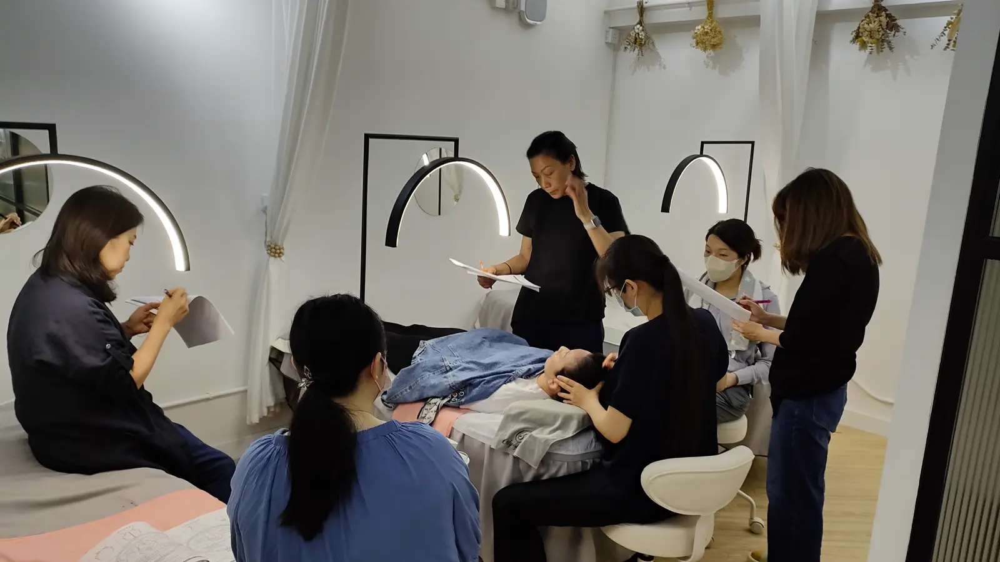

The Bojin Journal · Rituals & routines
The Two-Minute Bad-Day Routine

A student once apologized to me for "cheating," as she put it, on a night she was too exhausted for her usual routine. She'd done ninety seconds on her jaw instead of her full ten minutes and felt like she'd broken a rule. She hadn't. She'd done exactly the right thing: something small instead of nothing at all, on a day when nothing at all was the real alternative.
So here's the idea before the detail: this isn't a shortcut for a beginner still learning the method, and it isn't your everyday routine either. It's a deliberately stripped-down version for the days when ten minutes genuinely isn't there, built to protect the habit itself rather than to match what a full session does. One tight spot, warmed, worked, and drained. Two minutes, start to finish.
Why this is different from "just doing less"
Rushing through your usual full-face routine in two minutes means skimming everything and finishing nothing, which tends to feel unsatisfying and reinforces the idea that a short session isn't worth doing. This routine works differently: instead of doing a little of everything, you do one spot properly, at your normal pressure and angle, and skip the rest entirely. A single area, done right, in ninety seconds, beats six areas done in ten seconds each.
Picking the one spot that matters today
Skip trying to decide logically. Whatever area is actually bothering you right now, a tight jaw from a stressful call, a furrowed spot between your brows from squinting at a screen all day, is the one worth the two minutes you have. This isn't the day for thoroughness. It's the day for triage.
The two-minute version exists to protect the habit, not to replace the result. A missed day quietly makes the next missed day easier, and the one after that. Two focused minutes on your worst day keeps the habit alive until you have ten minutes again, which matters more over months than any single session's depth.
The two-minute version
Use a little oil or your usual moisturizer, even a small amount is enough for this.
- Ten seconds to warm one area Pick the one spot bothering you most today and glide the broad edge over it a few times, flat and quick, just to warm the surface.
- Sixty seconds on that one spot Work that single area at the working angle and a comfortable pressure, three to five passes, the way you would in a full session, just without moving on to anywhere else.
- Twenty seconds down the neck Finish with a few quick sweeps down the side of your neck, even compressed, so whatever you loosened has somewhere to go.
That's ninety seconds of actual work with a little room to spare. No warm-up for the whole face, no second area, no lingering. Just one spot, handled properly, then done.
What this routine is not for
This isn't the version to reach for every day out of convenience; used as your only routine, it will simply give you a smaller effect than a full session would, since you're working one small area instead of your whole face. It's specifically for the handful of days a week, or a month, when the honest choice is two minutes or nothing. On those days, two minutes wins every time.
An honest note
A ninety-second session won't do what a full ten-minute one does, and I wouldn't want you to think it does. What it does is keep a gentle, temporary habit from breaking entirely on a day that was never going to allow for more. Consistency, even in this compressed form, is worth more over months than an occasional long session surrounded by weeks of nothing.
On your next impossible day, don't skip entirely. Give it ninety seconds on one spot. That's not cheating. That's exactly the point.
Quick answers
Is two minutes actually enough to do anything?
Not as much as a full session, and that's fine; the two-minute version isn't meant to replace it. Its job is to keep the habit alive on a day you'd otherwise skip entirely, and a small amount of gentle, consistent attention still counts for something even when it's brief.
Which spot should I focus on if I only have two minutes?
Whichever single area is bothering you most that day, usually the jaw or the space between the brows for most women. Pick one spot rather than trying to rush through your whole usual routine in a fraction of the time.
Should I skip the neck finish if I'm short on time?
No, keep it, even in a compressed form. A few seconds down the neck matters more on a short session than on a long one, since there's less time for anything you loosened to resettle on its own before you finish.
Is it bad to rely on the two-minute version often?
Using it occasionally on genuinely packed days is exactly what it's for. If it becomes your only version most days, you'll simply see a smaller effect than a full session gives, but it still beats skipping entirely, and it keeps the habit from disappearing.
See the ninety-second version in real time
Two minutes goes by faster than you'd think. My free 3-minute video shows the full-length routine, so you can see exactly which parts to keep when time is short.
Watch the free 3-min videoYu-Ting Lan is a Taiwan-based international bojin instructor and the founder of Héhé Studio. She has taught her bojin method to more than a thousand students, from complete beginners to grandmothers, across Taiwan, Hong Kong, and Malaysia.